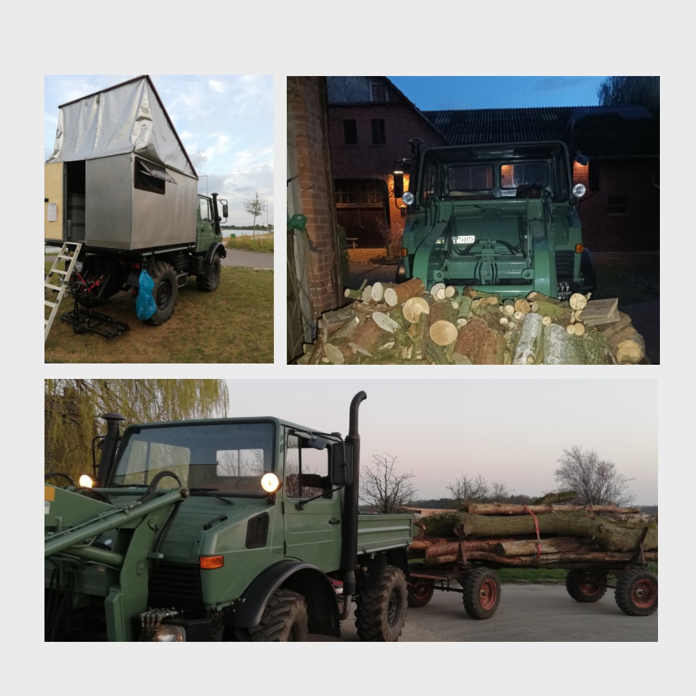

Der Unimog 424 aus dem Baujahr 1979 wurde ursprünglich von der Firma WIKA Beton in Stade eingesetzt – einem traditionsreichen Transportbetonwerk, das bereits 1962 gegründet wurde.
Im Jahr 2009 wurde der Unimog an eine private Familie aus Egerstorf (Ortsteil Schätzendorf) verkauft. Im selben Jahr erfolgte eine umfassende Restaurierung, bei der das Fahrzeug technisch und optisch überarbeitet wurde.
Seit 2017 befindet sich der Unimog im Besitz von Michael und wird weiterhin gepflegt und erhalten. Mit dem montierten Schmidt Frontlader FL4 ist der Unimog vielseitig einsetzbar und bleibt ein beeindruckendes Beispiel für die robuste 424er‑Baureihe.
← Zurück zur Übersicht